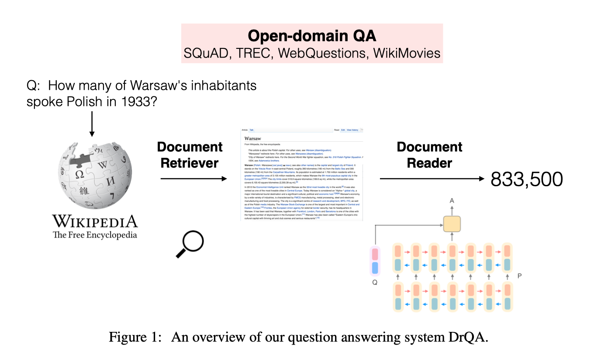

简介
Reading Wikipedia to Answer Open-Domain Questions 这篇文章是 斯坦福博士生 陈丹琦 发表在ACL2017 上的文章，她的工作主要是她在Facebook实习时做的，主要解决使用维基百科来解决开放领域的自动问答问题。原文链接。并且，论文的源码和系统已经公布在Github
Facebook首席科学家Yann LeCun也推荐了该系统
DrQA 是一个开放域的问答系统。向 DrQA 系统输入一段文本，然后提一个答案能在该文本中找到的问题，那么 DrQA 就能给出这个问题的答案。代码相关的论文将在 ACL 发表。向该团队致敬：FAIR 研究工程师 Adam Fisch、斯坦福博士实习生 Danqi Chen 和 FAIR 科学家 Jason Weston 和 Antoine Bordes。
模型动机
文章提出，许多知识图谱，他们的知识都过于稀疏，对于解决开放领域的问答不是特别适合。而维基百科，是一个实时更新的数据集，但是它是适合人读的，而不太适合机器进行阅读。
使用维基百科作为问答任务的知识源（knowledge source）来进行开放域自动问答，实际上就是先进行信息检索，在5百万词条中找到相关词条，然后对每个词条进行详细的阅读，以便找到相关答案。
In order to answer any question, one must first retrieve the few relevant articles among more than 5 million items, and then scan them carefully to identify the answer.
现存的机器阅读理解任务也是基于类似维基百科数据而创造的一些数据集，然而，机器阅读理解严重依赖于提供的任务文本，这对于真实的开放域的自动问答是不现实的。本文定义的任务 大规模阅读理解 MRS（machine reading at scale）就是将这两个结合起来，既需要对大量的语料进行检索，又需要对文本进行详细的分析。
Instead MRS is focused on simultaneously maintaining the challenge of machine comprehension, which requires the deep understanding of text, while keeping the realistic constraint of searching over a large open resource.
本文贡献
本文提出了一个名为DrQA的系统，包含两个主要的部分，文档召回器（Document Retriever）和文档阅读器（Document Reader）。文档召回器主要使用了 二元词袋哈希（Bigram Hash） 和 TF-IDF 匹配。 而文档阅读器主要是一个多层的循环神经网络阅读理解模型，主要找寻文本的span。
模型详解
如图所示即为整个DrQA系统的示意图。下面分两个部分介绍DrQA系统。

Document Retriever
Document Retriever 是一个快速的文档检索找回系统，本文为了考虑词的顺序，使用了n-gram特征。且在考虑到速率和内存利用率后，选用了bigram二元词袋哈希。具体思想是使用murmur3哈希算法，将所有的二元词袋，映射到$2^{24}$空间的二进制数上面去。
而在召回文档时，每次选择最相近的5个维基百科的文档。
Document Reader
Document Reader 首先对段落和问题都进行了编码，然后通过编码计算答案的首尾出现概率，通过其概率算得联合概率，取联合概率的最大值，得到问题的答案。
段落编码
首先对段落$P$的词向量特征$P={p_1,p_2,\cdot,p_m}$过一层RNN，文中选用的是双向的LSTM。
词向量特征$p_i$由以下特征构成：
- 词向量，直接用的
glove 840B词向量，且对频率最高的1000个词进行微调fine-tune，其他词词向量固定不变。作者这么做是认为what，how，why等高频词会对问答有影响。 - 三个维度的指示器
Exact Match，判断段落中的每个词是否在问题中出现了，如果出现了就是1，没有出现就是0。 - 词的语义特征。词性标注、实体标注以及词频。即（POS，NER，TF）。
- 对其的问题嵌入特征。即对问题的注意力特征。该特征考虑段落中的每个词与问题中每个词的相似度。该相似度组成了一个矩阵向量$a_{i,j}$即为每个词$p_i$的向量特征，这个特征是对
Exact Match特征的进一步优化，其计算公式如下：
$$a_{i,j}=\frac{\exp(\alpha(E(p_i))\cdot\alpha(E(q_j)))}{\sum_{j’}{\exp(\alpha(E(p_i))\cdot\alpha(E(q_{j’})))}}$$
其中,$\alpha()$为一个全连接层。
问题编码
问题编码的过程就相对简单，仅仅使用了一个RNN网络，得到${q_1,q_2,\cdots,q_l}$，仅仅用加权平均得到最终的向量表示$\mathbf{q}=\sum_j{b_j \mathbf{q}_j}$，而$b_j$是通过以下公式学习得到的:
$$b_j=\frac{\exp(\mathbf{w}\cdot\mathbf{q}j)}{\sum{j’}\exp(\mathbf{w}\cdot\mathbf{q}_{j’})}$$
模型输出
为了输出预测答案的span，答案的首尾概率分别为：
$$P_s(j) = \text{softmax}(p^j_i W_s q)$$和
$$P_e(j) = \text{softmax}(p^j_i W_e q)$$
计算收尾概率的联合分布：$P_s(j)\times P_e(j)$，且保证答案呢长度小于15，选择联合概率最大的结果作为模型输出答案。
一些细节
模型使用了
2016-12-21版本的英文维基百科语料数据，得到了5,075,182条文章，9,008,962条词条。训练集的构造方法，使用了远程监督的方法。首先使用
Document Retriever召回5篇维基百科文章。对于每一篇文章，去除所有不能够完全匹配答案的段落。小于25词大于1500词的段落也被丢弃掉了。如果问题中有命名实体named entity，则删掉所有不包含该实体的段落，然后在段落中包含答案的位置以20个词为窗口，计算与问题的unigram和bigram的重叠比例，选取重叠度最高的5个段落，将它们加入到训练集。如果不包含重叠，则舍弃这个样本。
结论和未来工作
尽管开放领域的问答现在效果不好，F1值从79%降到了28%。但是本文作者是尝试将阅读理解和信息检索结合起来，为后续的工作打下了很好的基础。作者提出了2个改进方向。
- 对多个不同的段落进行组合，联合训练，而不是现在对单一段落进行训练
Document Retriever和Document Reader目前是分开的两个系统，可以构建一个端到端的系统，将两个模型结合起来。